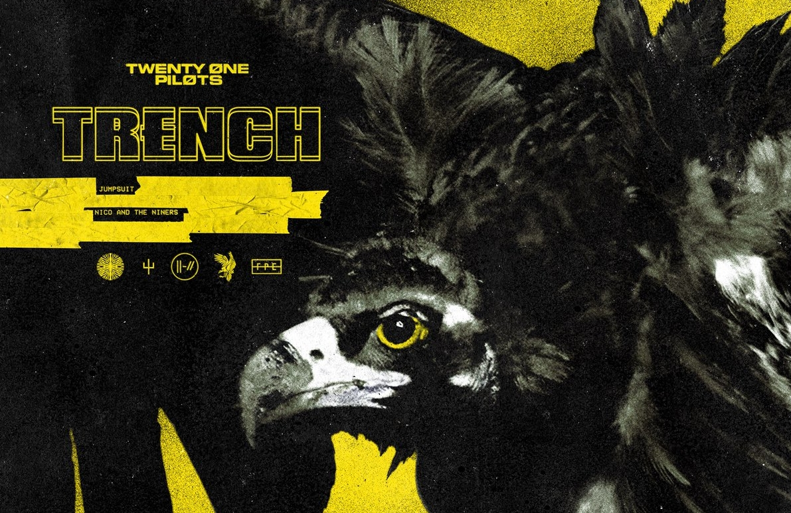
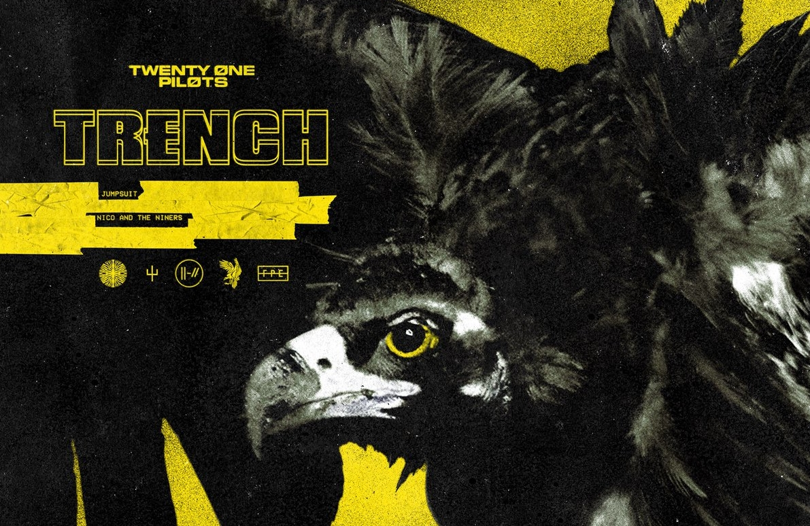
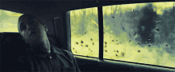
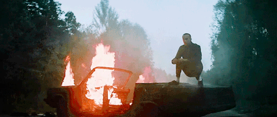
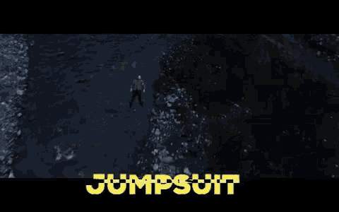
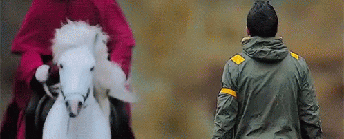
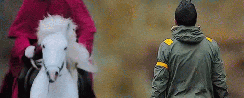

Trench is the 5th album from the young dou Americans Twenty one Pilots AKA “T1P”. the album has a very strong meaning behind everything
ok this is kind of it (I'm not a theorist) but i know a little, so basicallyback in 2017 they made i think their last 2017 song. it's called heavydirtysoul
the music video
so basically he goes around rapping then singing and while all that the car is getting loose more and more first the wheels then the doors then the roof and in the last part of the video the car catch on fire and tyler exits it and head to josh then the car explode. The end, it took the band a whole year to show up again on a song in a concert or interview or a video a url got viewed in a split second this lead to a website with many pics and gifs. some is like a vulture and old creepy "blueprint" of some kind of an ancient city (but more like a civilisation because of the shape). People went crazy and searched through everything. A whole wikipedia and a whole reddit post of everything where everyone write what they find and speculate. This lead to the leak of the album trench. Going to the time on July 11, 2018 as the first of the singles from their fifth studio album Trench (2018), alongside "Nico and the Niners". It is the first song to be released by the band after a year-long public silence.
in jumpsuit, u could see tyler on an exploded car
this leads us to know that this is the same car in the music video heavydirtysoul. In the music video you could also see tyler in a valley
he walks slowly through the valley
while walking people show up wearing a uniform showing that they are an army up the mountain looking at him, the same pic of them watching him was found in the old url (in black and white + filter)
then an old man wearing cape comes to him

 


then he follows him while everyone on the top of the mountain is looking. the man is known as Nicolas Bourbaki he is mentioned a lot in the songs but we will go back to him later. You will find tyler running from him in the last bit. We go to “levitate” (the rap song) we find him following the people in some sort of camp. There they cut his hair to somewhat bold. This lead us fans to see that tyler hair when he was on the car was cut so that means in jumpsuit he/they was showing Tyler before and after

music video
by that time he mentions the man Nicolas Bourbaki as he says in morph (verse 2) He'll always try to stop me, that Nicolas Bourbaki
He's got no friends close but those who know him most know
He goes by Nico, he told me I'm a copy
“Nicolas Bourbaki,” which can be shortened to Nico, is the full name of the infamous Bishop of Dema, introduced by name on the dmaorg.info website and the single “Nico and the Niners.” Tyler has confirmed that Nicolas Bourbaki is the real name of Blurryface.
…one of the things that I knew I wanted to do was to figure out Blurryface’s real name, and Blurryface’s real name is Nicolas Bourbaki.
In real life, Nicolas Bourbaki is not the name of an individual-but of a group of mathematicians formed in 1935.
many music videos goes more into details. Here we start to get a picture of everything
Twenty One Pilots On The Meaning Behind New Album 'Trench' & Blurryface's Real Name. ... While Blurryface largely deals with the theme of insecurity, Tyler says Trench represents feeling “the need to escape” and “being in between two places”.
u get to start with the song "nico and the niners"
in the start we can see the ancient city which is called by dema, it will get mentioned a lot. The song starts with the picture of the city dema. It somewhat shows that tyler is captured there, the goal with trench to show many feelings and struggle of tyler, tyler got through much and ibn trench it shows that he is captured in dema and he want to escape You can see that a little in "my blood" in the music video you will see a kid with his brother, they go through a lot and have fun together. until we find out that the brother is an imaginary friend
as we relive all the clips but he is alone as stated "That's not his brother, it's not his lover, it's not his imaginary friend. Its his other side"
so that means that he found himself when he could take care of himself in the last clip of the music video. Back to nico and the niners. In “nico and the niners” you see the "city"
people will know the city as u seen the blueprint. If u look closely at the middle u see circles


the pillars represent the bishops that is with nico As the longest is nico. if you look closely in the blueprint (center)

this means that in blurryface artwork it shows the pillars of the bishops

music video
Josh and the other Banditos carry torches to “signal if they are near,” but in reality, the torches are meant to represent hope for all who sees them, and being as Dema is a land of darkness, it would inspire those in Trench
in the intro we hear a backwarded song
[Intro (Reversed)]
Msilaiv ecnuoned ew
Tsae eurt daeh dna amed evael lliw uoy
Sotidnab era ew
umm creepy
The song begins with a toned down and reversed version of Tyler’s voice.
When played forwards, the track can be heard as,
We denounce Vialism
You will leave Dema and head true east
We are banditos
The fact the audio is reversed may be a way to suggest this message is supposed to be hidden, supposedly from the bishops who trap people in the fictional city of Dema. The bishops invented a religion called Vialism to keep the inhabitants of Dema from feeling hope and seeking help. The “banditos” are a group of individuals rescuing people trapped in Dema.
The “we are banditos” reversed audio clip was found on the dmaorg website in the weeks leading up the song’s release. this also needs to be noted that in the song "bandito" he say i am a ban- i am a bandito(edited)
the dmaorg website is the website that people find images in it. playing around with the url i got this. http://dmaorg.info/(edited). However the real website is this
http://dmaorg.info/found/15398642_14/clancy.php. you can find and read all this
. You can also for example find a vulture that's a symbol on the album artwork and many other like a cheetah representing the song "pet cheetah". back to nico and the niners again
[Chorus]
East is up, I'm fearless when I hear this on the low
East is up, I'm careless when I wear my rebel clothes
East is up, when Bishops come together they will know that
Dema don't control us, Dema don't control
East is up
these words were teased well before the release of the song through cryptic codes and images posted to an unofficial website.
At the time “Nico and the Niners” was released, the dmaorg.info site read a different message with “East Is Up” spread throughout in capital letters.
The fictional city of Dema is surrounded by giant walls, as mentioned on the band’s website dmaorg.info, so every cardinal direction is blocked off—the only way out is up.
This could also be referencing the sun rising in the east, suggesting a thematic parallel between “Nico and the Niners” and twenty one pilots' 2013 song “Truce,” where Joseph sings:
Now the night is coming to an end
The sun will rise and we will try again
East is the direction where the sun rises. “Things are looking up” refers to things getting better. The east is where the sun rises, signifying the end of the night and the beginning of the morning. In his song Message Man Tyler writes
“Remember the morning is when night is dead.”
He also writes
“You think twice about your life it probably happens at night right? Fight it.” in Holding on to You.
“East is up” refers to the morning, how things get better when the sun rises(edited)
While fans were uncovering data on the website leading up to the album’s release, the line was first understood as, “So did they bury you?” before it had been played back in reverse.
There’s a post on the dma.org website that has a Clancy letter. All the smudged letters spell out SODEEPNEDBAYOU, which sounds a lot like the distorted words.
Tyler Joseph in a tweet said
there’s someone I'd like you guys to meet.
i’ll introduce you to him tomorrow.
his name is Ned.
<{•.•}>"
This is in reference to the Chlorine music video, in which a little monster named Ned comes out and swims in a pool full of chlorine. The little emoticon looks like Ned, who has big black eyes, little stubby horns, and really big ears on the side of his head. I thought ned (the creature) didn't have anything to do with the stuff
[outro]
Fire, Nico and the Niners
The name “Nico” and its relationship to the character Clancy and the fictional city of Dema were teased before the release of this song in a GIF of a running cheetah posted on twenty one pilots' promotional website dmaorg. Flashing letters appear in the top center of the GIF that, when spaced out, read:
U N STILL I DONT C KNOW O HIS N REAL I NAME C DO O U?
This message translates to “U STILL DON’T KNOW HIS REAL NAME DO U?” with “NICO NICO” spelled out in the spaces between each word.
“Niners” is a collective term for the nine bishops that rule over the city of Dema. Nico is likely the name of one of these nine bishops. The bishops are a metaphor for various internal struggles and mental illnesses, such as insecurities and depression.
twenty one pilots previously used many of these same traits to describe their character Blurryface from their previous album of the same nine. The word “Niner” comes from the pronunciation of the number nine in the NATO phonetic alphabet and could also be a reference to the nine circles pictured on the Blurryface cover art. cut my lip comes to show more of tyler struggle
as in the [Verse 1]
I'll keep on tryin’, might as well
If you decide all is well
I'll keep on tryin', might as well (Might as well)
If you decide all is well (All is well)(edited)
This line communicates Tyler’s drive to keep persevering even when times get tough in his musical career. He will continue if his fans keep supporting him and his work. This continues a constant theme throughout Trench of focusing on those who continue their life, not those who end it earlier.
[Chorus]
Rust around the rim, drink it anyway
I cut my lip
Isn't what I want, blood is on my tongue
I cut my lip
This line highlights Tyler’s struggles with the music industry and the fast pace at which the band’s fame has grown in a short amount of time.
Starting out as a local band, Tyler and Josh may not have realized the drawbacks that come with a large amount of success in this industry. They saw the dangers of fame and the music industry, or the “rust around the rim”, but still went for it. Now their career seems to be at an all time high, with all the fans and pressure that they were warned about, and who knows if they were 100% ready for it. This further shows what he means with the whole album. Well chlorine. A favorite of mine, I thought it didn't have a lot in common with the other songs from the album.
“Chlorine” is a track about the cleansing power that music has on the narrator. Chlorine, while being a deadly chemical, is used to eliminate unwanted substances. As stated in the lyrics, the chemical is compared to a “vibe” or “beat.” While the chlorine has poisonous properties and could potentially cause harm, the narrator just can’t get enough.
A similar idea is found in an earlier song when Tyler says,
You gotta bleed to know
That you’re alive and have a soul
In both cases, the concept of pain, or something which would generally be unwanted is flipped on its side and used as a metaphor for that which is beneficial.
in the intro it says where are you? it has been a while
After releasing Blurryface in 2015, twenty one pilots announced a year-long hiatus from touring and social media. Paul Meany (lead singer from MUTEMATH) lends his voice at the beginning of the track as a way to welcome the listener back after a long time away. This is similar to the email the band sent out at the end of the hiatus:
The dark voice can also be heard as a backing vocal throughout the rest of the song and is present throughout other songs on the album, such as “Levitate” and “Pet Cheetah.” This further suggests that the character of this distorted voice is still a present side of Tyler within his music.
Sippin' on straight chlorine
Let the vibe slide over me
This song is about the cathartic effect writing and creating music has on Tyler. The chemical spoken of throughout the track is a metaphor for music.
Chlorine is extremely reactive, and drinking it can kill you. Although it sounds as if Tyler is struggling with his suicidal thoughts again, this time he is playing with it instead of letting it take control.
When I leave, don't save my seat
I'll be back when it's all complete
These lines are most likely referring to the hiatus. When Tyler says, “don’t save my seat” he means for his clique to listen to other music, and is further telling us it’s okay to listen to other songs, and bands. It also connects to the seventh song from Trench titled ¨Neon Gravestones,¨ in which Tyler explains the severity of suicide. Tyler reflects on his battle with suicidal thoughts and explains if he loses the fight, his death should not be glorified.
[Refrain]
I'm running' for my life
Runnin' for my life
Put into the context of this album, Tyler/Clancy is running for his life from the Bishops of Dema. So i know how long this is this it is just a beginning like theres alot i didn't write about, there are many things like "neon gravestone", "pet cheetah", "leave the city", "legend"
so maybe later but hey if u wonder anything ask me like even if u want to know something about a pictures
Links:
https://genius.com/albums/Twenty-one-pilots/Trench a special thanks for genius, they have very good explaining of all the lyrics and music videos. There is also the fandom page where many explanation happens. https://twentyonepilots.fandom.com/wiki/Dmaorg.info
THE END